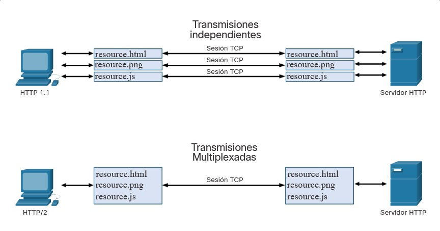

10.6.1 Protocolo de transferencia de hipertexto y lenguaje de marcado de hipertexto
Existen protocolos específicos de la capa de aplicación diseñados para usos comunes, como la navegación web y el correo electrónico. El primer tema le dio una visión general de estos protocolos. Este tema entra en más detalle.
Cuando se escribe una dirección web o un localizador uniforme de recursos (Uniform Resource Locator)(URL) en un navegador web, el navegador establece una conexión con el servicio web. El servicio web se está ejecutando en el servidor que está utilizando el protocolo HTTP. Los nombres que la mayoría de las personas asocia con las direcciones web son URL e identificador uniforme de recursos (URI).
Para comprender mejor cómo interactúa el navegador web con el servidor web, podemos analizar cómo se abre una página web en un navegador. Para este ejemplo, utilice el URL http://www.cisco.com/index.html.
Paso 1
El explorador interpreta las tres partes del URL:

Paso 2
El navegador luego verifica con un Servidor de nombres de dominio (DNS) para convertir a www.cisco.com en una dirección numérica que utiliza para conectarse con el servidor. El cliente inicia una solicitud HTTP a un servidor enviando una solicitud GET al servidor y solicita el archivo index.html.

Paso 3
En respuesta a la solicitud, el servidor envía el código HTML de esta página web al navegador.

Paso 4
El navegador descifra el código HTML y da formato a la página para que se pueda visualizar en la ventana del navegador.

10.6.2 La URL de HTTP
Las URL de HTTP también pueden especificar el puerto en el servidor que debe manejar los métodos de HTTP. Además, puede especificar una cadena y un fragmento de la consulta. Normalmente, la cadena de la consulta contiene información que no maneja el propio proceso del servidor HTTP, sino otro proceso que se ejecuta en el servidor. Las cadenas de la consulta comienzan con un carácter “?” y, normalmente, constan de una serie de pares de nombre y valor. Un fragmento comienza con un carácter “#”. Hace referencia a una parte subordinada del recurso que se solicita en la URL. Por ejemplo, un fragmento puede hacer referencia a un delimitador nombrado en un documento HTML. La URL tendrá acceso al documento y, luego, se dirigirá a la parte del documento especificada por el fragmento si existe un enlace del delimitador nombrado que coincida en el documento. En la figura, se ve una URL de HTTP que incluye estas partes.

10.6.3 Operación HTTP

HTTP es un protocolo de solicitud y respuesta que utiliza el puerto TCP 80, aunque se pueden utilizar otros puertos. Cuando un cliente (normalmente, un navegador web) envía una solicitud a un servidor web, utiliza uno de los seis métodos que especifica el protocolo HTTP.
Aunque HTTP es sumamente flexible, no es un protocolo seguro. Los mensajes de solicitud envían información al servidor en texto sin formato que puede ser interceptado y leído. Las respuestas del servidor, generalmente páginas HTML, también están sin cifrar.
10.6.4 Códigos de estado de HTTP
Las respuestas del servidor HTTP se identifican con diversos códigos de estado que le informan a la aplicación host el resultado de las solicitudes que el cliente le realiza al servidor. Los códigos se organizan en cinco grupos. Los códigos son numéricos y el primer número del código indica el tipo de mensaje. Los cinco grupos de códigos de estado son los siguientes:
En la figura, se ve una explicación de algunos códigos de estado comunes. Un excelente recurso para obtener detalles sobre códigos de estado específicos se puede encontrar buscando «rest api tutorial» y «códigos de estado HTTP». Los códigos de estado HTTP se muestran en el tráfico de cliente/servidor HTTP y son útiles para las investigaciones de ciberseguridad.
| Código | Estado | Significado |
|---|---|---|
| 1xx - Informativo | ||
| 100 | Continuar | El cliente debe continuar con la solicitud. El servidor ha verificado que la solicitud se puede cumplir. |
| 2xx - Operación exitosa | ||
| 200 | OK | La solicitud se completó correctamente. |
| 202 | Aceptada | La solicitud ha sido aceptada para su procesamiento, pero el procesamiento no está terminado. |
| 4xx - Error en cliente | ||
| 403 | Prohibida | El servidor entiende la solicitud, pero el recurso no se cumplirá. Esto se debe posiblemente a que el solicitante no está autorizado para ver el recurso. |
| 404 | No se encontró | El servidor no puede encontrar el recurso solicitado. Esto puede deberse a una URL obsoleta o incorrecta. |
10.6.5 HTTP/2
HTTP/2 es una revisión importante de la especificación del protocolo HTTP. El propósito de HTTP/2 es mejorar el rendimiento HTTP abordando problemas de latencia que existían en la versión HTTP 1.1 del protocolo. HTTP/2 utiliza el mismo formato de encabezado que HTTP 1.1 y utiliza los mismos códigos de estado. Sin embargo, hay muchas características importantes de HTTP/2 que un analista de ciberseguridad debe tener en cuenta.

10.6.6 Asegurando HTTP ─ HTTPS
Para una comunicación segura a través de Internet, se utiliza el protocolo HTTP seguro (HTTPS). HTTPS utiliza el puerto TCP 443. HTTPS utiliza autenticación y cifrado para proteger los datos mientras viajan entre el cliente y el servidor. HTTPS utiliza el mismo proceso de solicitud del cliente y respuesta del servidor que HTTP, pero el flujo de datos se encripta con la capa de sockets seguros (SSL) o la seguridad de la capa de transporte (TLS) antes de transportarlo por la red. Aunque SSL es el predecesor de TLS, ambos protocolos suelen denominarse SSL.
HTTPS/2 se especifica para utilizar HTTPS sobre TLS con la extensión de negociación de protocolo de capa de aplicación (ALPN) para TLS 1.2 o posterior. El estándar HTTP/2 no especifica el cifrado; sin embargo, todas las aplicaciones de software cliente principales lo requieren. Por lo tanto, se puede suponer que HTTP/2 está encriptado.
Mucha información confidencial se transmite por Internet usando HTTPS, como las contraseñas, los datos de tarjetas de crédito y la información médica.
10.6.7 Práctica de laboratorio - Utilizar Wireshark para examinar tráfico HTTP y HTTPS
En esta práctica de laboratorio se cumplirán los siguientes objetivos: